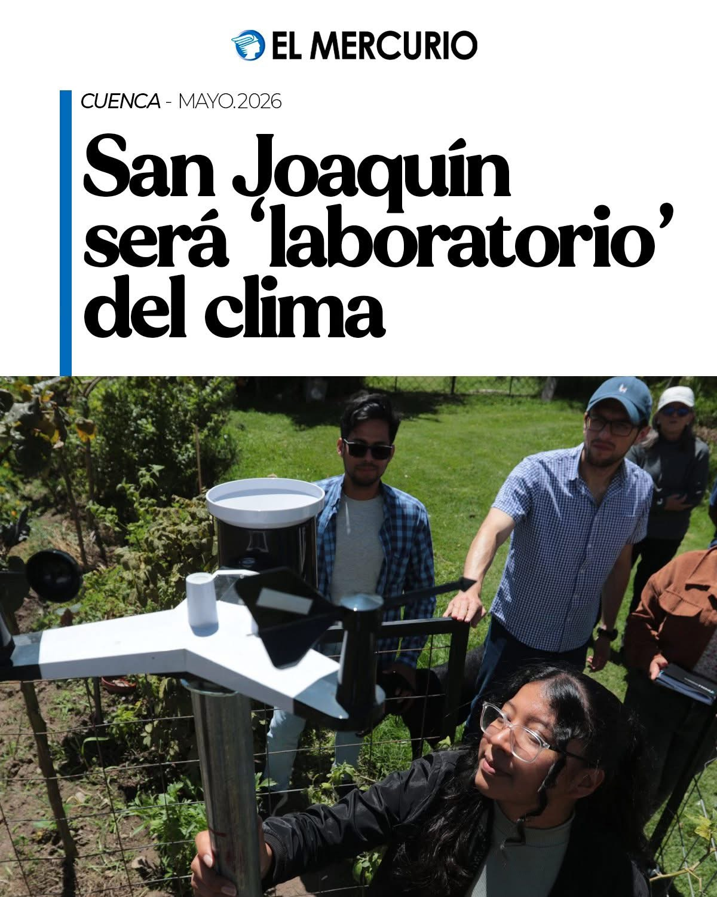
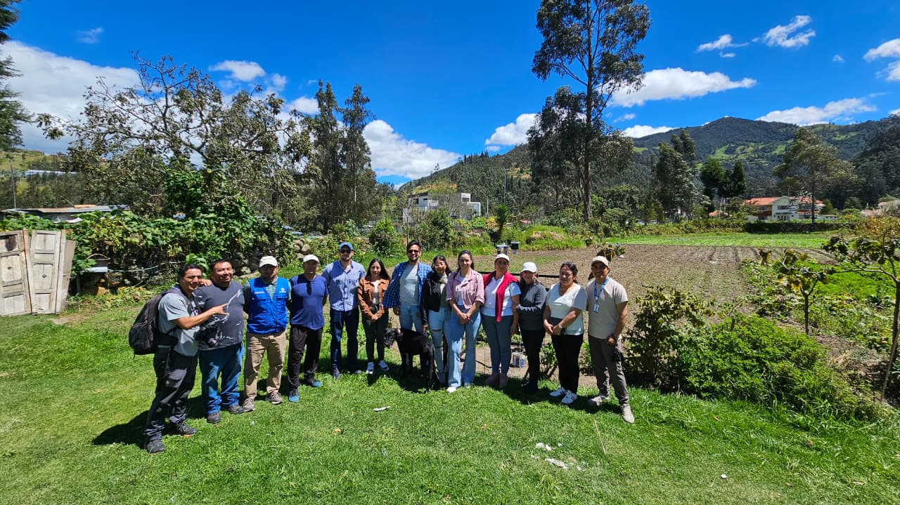
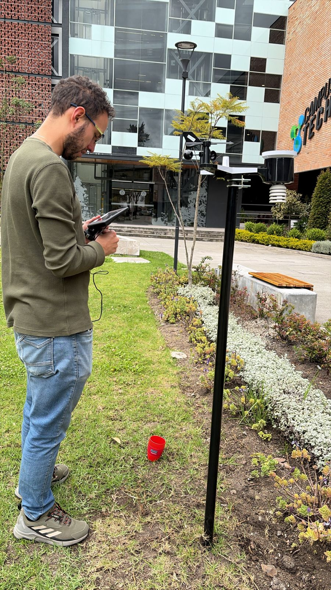
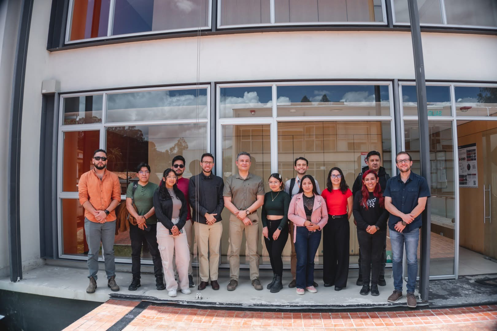
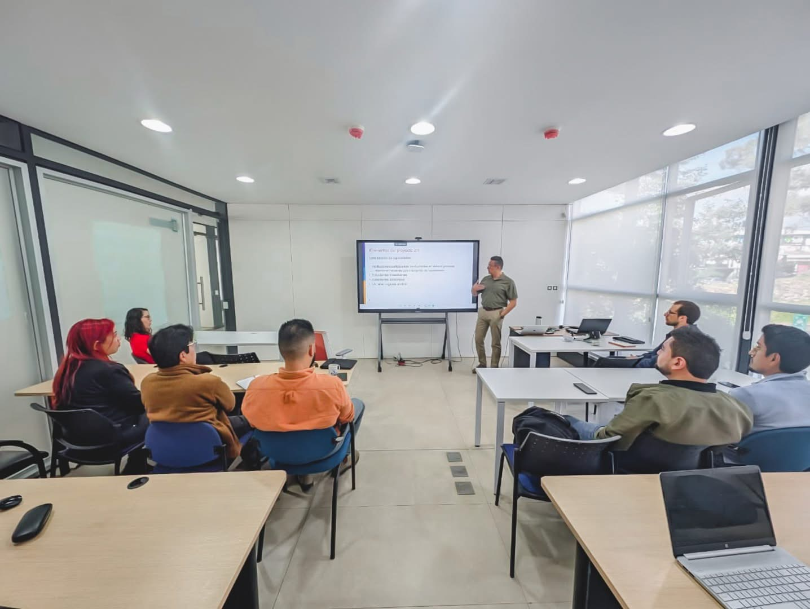
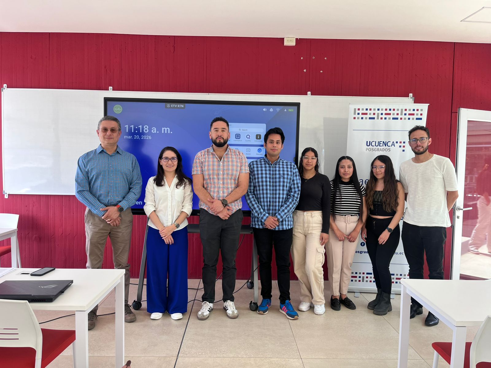

May 21, 2026 – Rural monitoring station featured in local newspaper
The installation of the monitoring station in the rural case study of Barabón Chico–San Joaquín was featured in a local newspaper. As part of the coverage, project students and collaborators were interviewed to discuss the importance of environmental monitoring and its role in supporting sustainable water management in the community.
During the interviews, the team highlighted how continuous monitoring of weather and environmental conditions can provide valuable information for improving irrigation management and supporting informed decision-making by local farmers and water users. The station will generate data that can help optimize water use, increase resilience to climate variability, and strengthen local adaptation strategies.
The news coverage also emphasized the project's commitment to bridging scientific research with practical community applications. By working closely with local stakeholders, the project seeks to ensure that scientific knowledge and monitoring technologies contribute directly to addressing real-world challenges faced by rural communities.

May 20, 2026 – Installation of monitoring stations in urban and rural case studies
Two monitoring stations were installed in the field! One in the urban case study (Campus Universida del Azuay) and one in the rural case study (Barabón-Chico). The stations started collecting data after being evaluated alongside reference sensors for quality-control and validation purposes.
These stations will support continuous monitoring and provide key data for assessing local hydroclimatic conditions in both study areas.


May 8, 2026 – Universidad de Cuenca, Ecuador
We held the first coordination workshop with strategic partners for the implementation of the CRIDA-UNESCO methodology in Cuenca. On this occasion, representatives from ETAPA EP and the Provincial Government of Azuay participated.
This meeting marks an important step toward defining joint work strategies and strengthening technical and institutional cooperation to support local water security.


March 20, 2026 – Universidad de Cuenca, Ecuador
Three master’s students involved in the project defended their thesis proposals at Universidad de Cuenca. The proposed research topics are aligned with the project’s objectives and address key challenges in climate change, hydrology, and sustainable water management in Andean environments.
- Ecohydrological vulnerability and resilience of a páramo catchment under climate stress
- Green area effectiveness for improving outdoor thermal comfort in an Andean mid-size city
- Identifying robust adaptation strategies in a high Andean irrigation system
These theses will contribute directly to the project’s research outputs, supporting the development of innovative approaches for climate resilience in both urban and rural water systems.

February 23, 2026 – Universidad de Cuenca, Ecuador
The local team at Universidad de Cuenca and Universidad del Azuay installed four low-cost meteorological sensors at Universidad de Cuenca for evaluation purposes. The sensors were installed in the same location as a reference meteorological station that meets World Meteorological Organization guidelines, allowing comparison and calibration before the sensors are deployed in the field. This evaluation and correction protocol will be documented and is one of the expected outputs of the project. These sensors will later be installed in the urban and rural case study sites.


February 10, 2026 – Universidad de Cuenca, Ecuador
Prof. Paul Muñoz from Universidad de Concepción and co-coordinator from Vrije Universiteit Brussel visited Universidad de Cuenca for a kick-off meeting with the local team from both Universidad de Cuenca and Universidad del Azuay. The meeting focused on coordinating the first project activities, meeting the three master's students benefiting from the project scholarships, and planning the next steps with local stakeholders. Discussions also included the installation of sensors purchased for monitoring hydrometeorological variables in both urban and rural case studies.


January 15, 2026 – Online
A virtual workshop was conducted by Prof. Paul Muñoz to introduce low-cost sensors for monitoring hydrometeorological variables in urban and rural case studies. The hands-on session included an explanation of the sensors, the communication protocols used to transmit data in real time, and practical recommendations for installing and operating the sensors in the field.


September 26, 2025 – VUB, Brussels
A visit was made to Prof. Ann Van Griensven and the Department of Water and Climate (HYDR) at Vrije Universiteit Brussel. The discussions focused on ongoing collaborations, research synergies, and upcoming joint initiatives under the project framework.

September 25, 2025 – KU Leuven, Belgium
A visit was conducted with Prof. Anne Gobin at KU Leuven. The meeting centered on exploring collaboration opportunities, exchange of methodologies, and potential alignment of research activities between both institutions.

September 1, 2025 – Ecuador
Official launch of the project.
July 2025 – Kick-off preparations
Initial warming-up activities began with partner coordination and scholar selection. These early steps were essential for ensuring the readiness of all components for the formal project start in September.